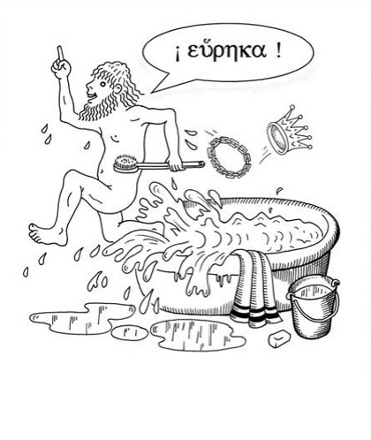
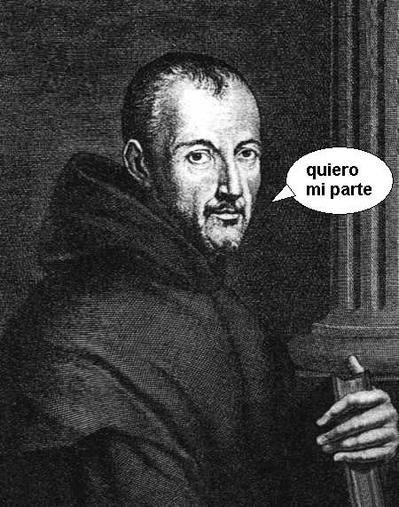

Mersenne, divertimento dominical para Nerds
Los Nerds hemos estado desde siempre. En la antiguedad tenemos varios, como Euclides, quien en vez de acompañar a sus amigos a dar unas vueltas por el Faro (el lugar de moda de Alejandría), prefería quedarse resolviendo teoremas geométricos.
O Arquímides, un geek que se puso a correr desnudo por las calles gritando Eureka! cuando descubrió el principio que permitía flotar a los trirremes (claro que el principio para hundirlos ya había sido descubierto por los romanos).
Otras fuentes dicen que corría contento porque con ese descubrimiento se ganaba un capital de riesgo que había puesto el Rey de Siracusa.

La edad media fue dominada por Nerds mas fundamentalistas, quienes, al no poder discutir sobre cuál distribución de Linux era superior, llenaban los foros argumentando sobre cuantos ángeles caben en la cabeza de un alfiler.
Las cosas mejoraron en el renacimiento, y en esa época sí que hubo varios nerds y geeks famosos, pero quiero adelantarme un poco más, para hablarles de un nerd que inventó un deporte para ñoños que aún se practica en estos días.
Me refiero a Marin Mersenne, contemporáneo de ese filósofo, mitad geek, mitad gigoló, René Descartes y amigo de Étienne Pascal, el papá del primer emo de todos los tiempos: Blaise Pascal.
En esos tiempos, como no tenían Facebook, estos personajes se escribían cartas discutiendo sobre el tema favorito de muchos geeks (hasta estos días), la teoría de números.
Al parecer a Mersenne no le fue tan bién con el sexo opuesto como a sus amigos Descartes y Pascal, así que se hizo monje e ingresó a la orden de los mínimos. En esos tiempos era una manera de obtener beca de estudios, si Mersenne viviera hoy en día seguro sería académico universitario y predicaría las bondades del software libre.
Un día Mersenne se puso a estudiar cierta clase de números, que en realidad fue descubierta por Euclides (el ñoño del principio de esta historia), pero como la historia es algo cruel, estos números se conocen como Números de Mersenne.
Estos números tienen la aburrida forma: 2 n-1, pero se ponen interesantes cuando además son números primos(todo geek sabe lo que es un número primo, pero si eres de esos que se cree geek porque tiene un iPhone, o porque escribes un blog, sería bueno que visites la wikipedia y averigues que son estos números primos, para que entiendas el resto de lo que viene y no te pierdas la diversión).
Bueno, descubrir cuales son los Primos de Mersene (no, no sus parientes, estamos hablando de números que son primos y además de Mersenne), se convirtió en un desafío intelectual durante los últimos siglos, y últimamente puede resultar bastante rentable.
Porque resulta que hay un premio, que ofrece 100.000 dolares al primero que encuentre un número primo con más de 10 millones de dígitos, y lo más seguro es que el cuadragésimo sexto número de mersene (el 46) cumpla con esta propiedad.

Pero encontrar números primos de Mersenne no es fácil, de hecho cuando falleció Mersenne sólo se conocían 7 números primos de Mersenne, y el octavo lo descubrió Euler, casi 200 años después.
Hasta ahora se han encontrado 44, y los últimos 10 han sido descubiertos a través de a un proyecto de computación distribuida llamado GIMPS (The Great Internet Mersenne Prime Search, la Gran Búsqueda por Internet de los Primos de Mersenne).
Hoy dia los geeks ya no buscan numeros primos en una pizarra, o con lápiz y papel, sino que con el computador (seamos honestos los geeks buscamos todo usando el computador, hasta la polola). Y ahora, gracias a internet, podemos aprovechar el tiempo ocioso de miles de computadores en internet.
GIMPS es un proyecto en que te inscribes, instalas un programita en tu computador, y este se conecta con un servidor central. Mientras tú no usas tu computador, el programa se dedica a calcular posibles candidatos a primo de mersenne.
Así es como un grupo de geeks han sumado sus nombres a la historia de las matemáticas, porque prestaron su cpu para encontrar un número.
Hace poco se anunció que el posible candidato al número de Mersenne número 45 se habría encontrado, pero habrá que esperar hasta la primera quincena septiembre para confirmarlo, y a ver si alcanza a romper la barrera impuesta por el premio de la FSF.
Así que aún tienen tiempo, si les interesa cobrar una parte de esos 100.000 dolares, y pasar al salón de la fama de las matemáticas, pueden participar del proyecto GIMPS.
ACTUALIZACION:
Ya se confirmó que hemos encontrado el cuadragesimo quinto número de Mersenne, salud!
Pero además se encontró el cuadragesimo sexto numero de Mersenne, así que los chicos de GIMPS van a cobrar su cheque de 100.000 dolares, que les parece?
Mas detalles en mersenne.org